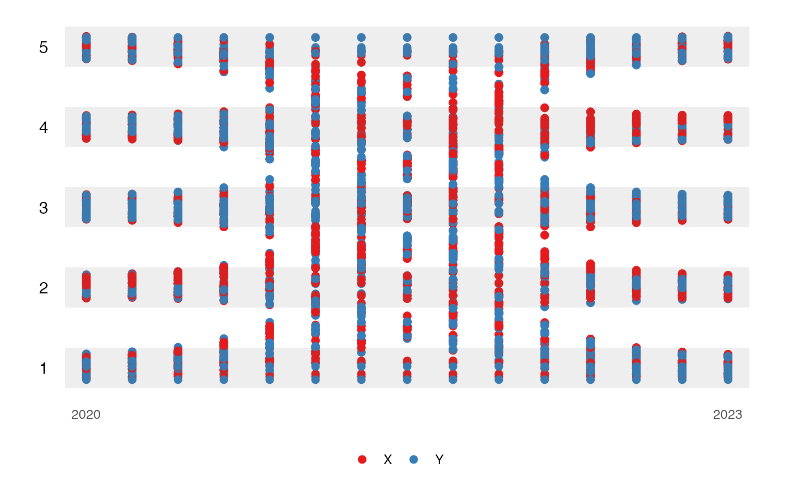
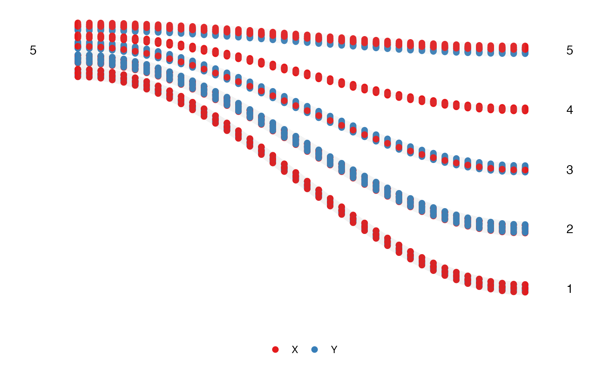

The inspiration for this package comes from the NY Times animated plot. The challenge of reproducing the animation is the amount of code required. This package tries to solve that by reducing it to only three steps. This package also adds a new element of proportional Sankey shaded area.
First stage: Prepare the data
In this stage, we first need to prepare the data structure to a specific format. This function will assign a frame, calculate the scaling, and create the necessary data and settings for the next stage.
The data needs to contain the following variable for the function to work:
- id:
ID, it needs to be a factor variable. - values:
sales, needs to be a numeric variable. - time:
year, it needs to be an integer variable.
animbook <- anim_prep(osiris, ID, sales, year)
#> You can now pass the object to the plot function.There are also additional options that allow the user to customize.
- label: group labeling.
- ngroup: number of groups we want to split the values into.
- breaks: the group bins size (prototype)
- group_scaling: the grouping variable for the bins calculations.
- color: the variable used to color the observations.
- time_dependent: logical. Whether we want the observations to start at the same time or not.
- scaling: the scaling method, either
rankorabsolute. - runif_min: minimum value for random addition to frame numbers
- runif_max: maximum value for random addition to frame numbers
The function can calculate four different scales using these options.
# rank scaling
rank_scaling <- anim_prep(data = osiris, id = ID, values = sales, time = year)
#> You can now pass the object to the plot function.
# absolute scaling
absolute_scaling <- anim_prep(data = osiris, id = ID, values = sales, time = year,
scaling = "absolute")
#> You can now pass the object to the plot function.
# rank scaling by group
rank_group_scaling <- anim_prep(data = osiris, id = ID, values = sales, time = year,
group = country)
#> You can now pass the object to the plot function.
# absolute scaling by group
absolute_group_scaling <- anim_prep(data = osiris, id = ID, values = sales, time = year,
group = country, scaling = "absolute")
#> You can now pass the object to the plot function.
rank_scaling
#> $data
#> # A tibble: 10,270 × 3
#> id time qtile
#> <fct> <int> <dbl>
#> 1 AE30008GU 2006 1
#> 2 AT9110050653 2006 3
#> 3 AU001150849 2006 5
#> 4 AU004085330 2006 1
#> 5 AU006624228 2006 2
#> 6 AU008720223 2006 5
#> 7 AU009066648 2006 5
#> 8 AU009134114 2006 3
#> 9 AU009213754 2006 4
#> 10 AU009219809 2006 2
#> # ℹ 10,260 more rows
#>
#> $settings
#> $settings$gap
#> [1] 1.2
#>
#> $settings$xbreaks
#> [1] 2006 2007 2008 2009 2010 2011 2012 2013 2014 2015 2016 2017 2018
#>
#> $settings$label
#> [1] "5" "4" "3" "2" "1" "0"
#>
#> $settings$breaks_scales
#> [1] 0.0 0.2 0.4 0.6 0.8 1.0
#>
#> $settings$time_dependent
#> [1] FALSE
#>
#>
#> attr(,"class")
#> [1] "categorized"This function will return an animbook object containing
a list of the formatted data and settings.
Second stage: Plotting the data
After preparing the data, we can not plot it. There are three plots available in this package:
-
kangaroo, which plots the observation’s movement over time. -
wallaby, which subset the plot to eithertoporbottomand see which group they are in after the observational period. -
funnel_web_spider, which is a faceted plot by time variable.
label <- c("Top 20%", "20-40", "40-60", "60-80", "80-100", "not listed")
animbook <- anim_prep(data = osiris, id = ID, values = sales, time = year, color = japan, label = label)
#> You can now pass the object to the plot function.
# kangaroo plot
kangaroo_plot(animbook)
#> You can now used the animbook::anim_animate() function to transforemd it
#> to an animated object.
# wallaby plot
wallaby_plot(animbook)
#> You can now used the animbook::anim_animate() function to transformed it
#> to an animated object.
# funnel web spider plot
funnel_web_plot(animbook)
The kangaroo and wallaby plots can be
animated using the function of the next stage.
funnel_web_spider only supported static plot. We can also
choose whether we want to animate the plot using gganimate or
plotly.
Third stage: Animating the plot
To animate the plot, we need to save the plot into an object, which then can be passed on to the function.
animbook <- anim_prep_cat(data = aeles, id = id, values = party, time = year, color = gender, time_dependent = FALSE)
p <- wallaby_plot(animbook)
p2 <- anim_animate(p)
gganimate::animate(p2)